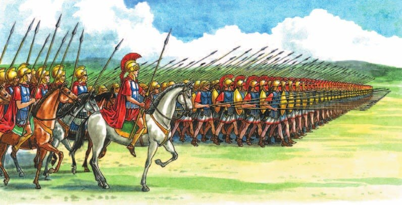
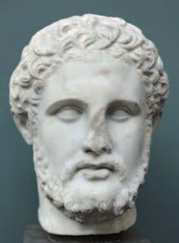
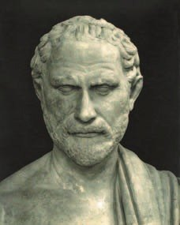
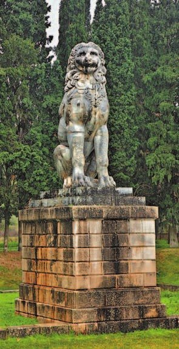

Пелопоннесская война
Афины и Спарта спорили, кто главный в Греции. В 431 году до н. э. спор перешёл в войну. Её назвали , и она шла 27 лет. Посчитаем: 431 − 27 = 404 — война кончилась в 404 году до н. э.
Воевала почти вся Греция: одни полисы — за Спарту, в Пелопоннесском союзе, другие — в Афинском морском союзе (§29).
В самом начале войны в Афинах началась чума. Умерли сотни людей — и среди них Перикл.
Афины требовали с союзников большую дань — и союзники от них отвернулись. А персы тайно давали деньги Спарте: она ведь воевала с их злейшим врагом. Гибли люди и корабли, рушились города, вытаптывались поля и виноградники.
Измученные Афины проиграли. Корабли у них сожгли, Длинные стены срыли — те самые, что тянулись до порта Пирей (§29). Морской союз распустили, а Афины должны были платить Спарте огромную дань.
Теперь Грецией командовала Спарта. Повсюду она свергала демократию и ставила у власти аристократов. Непокорные города облагала данью.
Но полисы объединились и сбросили власть Спарты. А потом начали враждовать друг с другом — и войны разоряли Грецию.
Победа не принесла Спарте счастья. В неё хлынуло золото и серебро — то, что раньше там было запрещено (§27). «Община равных» рухнула: одни разбогатели, другие нет, и граждан-воинов стало меньше. Позже ослабевшую Спарту разбили воины из Беотии.
Крестьяне устали от войн и хотели мира. Одни греки стали искать помощи у Персии, другие — у Македонии, которая набирала силу.
Соперничество Афин и Спарты за господство в Греции в 431 году до н. э. переросло в войну. Она получила название Пелопоннесской и продолжалась 27 лет. В войну были вовлечены практически все греческие государства: одни — на стороне Спарты в составе Пелопоннесского союза, другие — на стороне Афинского морского союза.
В начале войны в Афинах вспыхнула эпидемия чумы. Сотни людей умерли от болезни, в том числе и Перикл.
Афины обложили союзников большой данью и этим оттолкнули их от себя. В то же время персы тайно помогали деньгами Спарте, воевавшей против их злейшего врага. Во время боевых действий гибли люди, уничтожались морские суда, разрушались города, вытаптывались поля и виноградники.
Истощённые войной и покинутые союзниками Афины потерпели поражение. Они лишились флота (оставшиеся суда были сожжены) и укреплений — Длинные стены, которые служили надёжным укрытием афинянам, срыли. Афинский морской союз был распущен, а сам полис обязали выплачивать Спарте огромную дань.
Эллада оказалась во власти Спарты и возглавляемого ею Пелопоннесского союза. Спартанцы повсюду свергали демократию и устанавливали власть аристократов. Города, которые противились их воле, облагали данью.
Большинство полисов объединились и свергли власть спартанцев. Однако после получения независимости многие полисы начали враждовать. Войны между ними ослабляли Грецию, разоряли её хозяйство.
Былые победы принесли Спарте одни несчастья. Огромное количество золота и серебра, наводнившее спартанский полис, разрушило «общину равных». Спарта лишилась своей главной опоры — равноправных граждан-воинов. Позднее ослабевшую Спарту разгромили воины из Беотии.
Земледельцы, уставшие от разорительных войн, хотели мира. Одни греки начали искать поддержку у Персии, другие — у набиравшей силы Македонии.
- Подумай, с чем было связано ослабление Эллады.
1. Афины потеряли Длинные стены (§29). Почему это было так опасно для города?
2. Почему золото погубило Спарту? Вспомни, что было запрещено в Спарте и что такое «община равных» (§27).
3. Почему персы тайно помогали Спарте? Вспомни, кто вёл войну с персами на море (§28—29).

Македония при Филиппе II
В середине IV века до н. э., пока греческие полисы воевали между собой, на севере Балканского полуострова выросло Македонское государство. Его царь был дальновидным политиком, умелым дипломатом и талантливым полководцем.
Он укрепил свою власть, основал новые города и стал чеканить золотые монеты — «филиппики». Позже «филиппиками» назовут и гневные речи — так назывались речи Демосфена против Филиппа (о нём в разделе 3). А ещё македонцы взяли у греков алфавит.
Главное изобретение Филиппа — македонская . Воины с длинными копьями и короткими мечами, в панцирях, стоят 16 рядами, до тысячи человек в ряду. Это до 16 тысяч воинов — больше, чем зрителей в «Live Арене» (§33).
Копья у первых рядов разной длины — до 5—6 метров, это две ваши рулетки или два этажа дома. Копья кладут на плечи тем, кто стоит впереди, — и вперёд торчат тысячи копий разом. Если враг заходит сзади, задние ряды просто разворачиваются. А начинают бой лучники и пращники — издалека.
С такой армией Филипп завоевал Фессалию, Эпир, Фракию и другие земли. Отсталая раньше Македония стала самым сильным государством Средиземноморья.
В середине IV (4) века до н. э., пока греческие полисы воевали между собой, на севере Балканского полуострова возникло Македонское государство. Его царь Филипп II (2) был дальновидным политиком, искусным дипломатом и талантливым полководцем.
Достижением в военном деле стала македонская фаланга. Вооружённые длинными копьями и короткими мечами, фаланги были защищены панцирями. Первые ряды воинов имели разную длину копий (до 5—6 метров), которые клали на плечи впереди стоящих. Таким образом одновременно использовалось несколько тысяч копий. Последние ряды фаланги, в случае если противник заходил с тыла, разворачивались в его сторону, встречая тысячами копий. Отряды легковооружённых лучников и пращников начинали сражение, не приближаясь к неприятелю.
Филипп II (2), используя свою армию, завоевал Фессалию, Эпир, Фракию и ряд других областей на Балканском полуострове. В середине IV (4) века до н. э. ранее отсталая Македония представляла собой самое сильное средиземноморское государство.
- Почему возвышение Македонии связано с царём Филиппом II (2)?
4. Сравни фалангу гоплитов (§23) и македонскую фалангу. Что нового придумал Филипп?
5. Македонцы взяли у греков алфавит. А откуда алфавит у самих греков? Вспомни §13 и §23.

Греция под властью Македонии
Первыми Филиппу подчинились полисы Северной Греции. Он не стеснялся ничего: угрожал, подкупал, хитрил. И у него было немало сторонников среди самих греков.
Против Македонии выступил афинский оратор . Греки говорили: «Что на войне железо, то в политике — слово». Демосфен стоял за полную свободу полисов и за демократию в Афинах.
А ведь в детстве он был невзрачным мальчиком со слабым голосом и неразборчивой речью. Он подолгу тренировался один: набирал в рот камешки и на берегу моря старался перекричать шум прибоя. Ты долго училась на пианино — и потом стало получаться классно. Долго тренировала «берёзку». Вот так и Демосфен: упорством стал великим оратором.
Филипп щедро платил противникам Демосфена, и они уговаривали афинян покориться. Царь говорил: любые ворота откроет осёл, гружённый золотом. Одни греки ненавидели Филиппа как врага свободы. Другие хвалили: он объединил Грецию и прекратил войны между полисами.
Демосфен обличал тех, кто продал родину за золото, и звал объединиться вокруг Афин. Его речи помогли: многие полисы объединились против Македонии.
В 338 году до н. э. у города греки сразились с македонцами. Демосфен стоял простым гоплитом в первых рядах. Греки уже теснили врага, но сын Филиппа, юный Александр, ударил с левого фланга и обратил афинян в бегство. Профессиональная армия оказалась сильнее.
Там же погиб «Священный отряд» из Фив — 300 молодых воинов, как 300 спартанцев у Фермопил (§28). На месте их гибели поставили мраморного льва высотой 5 метров — почти два этажа твоего дома.
Филипп не стал разрушать города и мстить. Он объявил полисы свободными и объединил их в . В 337 году до н. э. он позвал греков в поход на Персию — и греки с радостью согласились. Но Филиппа убил его собственный телохранитель.
Первыми под власть македонского царя попали полисы Северной Греции. Филипп II (2) для достижения своих целей использовал любые средства: угрозы, подкуп, интриги. У него было немало сторонников среди эллинов.
Борьбу с Македонией возглавил афинский оратор Демосфен. В Древней Греции большую роль в политической жизни играло ораторское искусство. Эллины считали, что «тем могуществом, которым обладает на войне железо, в политической жизни обладает слово». Демосфен был сторонником полной свободы греческих полисов и демократии в Афинах.
Противники афинского оратора, которых Филипп II (2) щедро одаривал деньгами, уговаривали афинян подчиниться Македонии. Её царь был убеждён, что двери любого города способен открыть осёл, гружённый золотом. Одни греки ненавидели Филиппа как врага свободы и демократии. Другие славили македонского царя за то, что он объединил Грецию и прекратил войны между полисами.
Демосфен обличал людей, предавших родину за золото. Он призывал объединиться вокруг Афин и противостоять угрозе завоевания. Речи оратора имели большой успех, многие полисы объединились с целью борьбы против Македонии.
В 338 году до н. э. у города Херонея произошло сражение объединённого греческого войска с македонской армией. Эллины сражались храбро. Демосфен как простой гоплит находился в первых рядах войска. В момент, когда эллины потеснили противника, сын Филиппа, юный Александр, который командовал левым флангом македонской армии, обрушился на афинян и обратил их в бегство. Профессиональная армия македонцев оказалась сильнее. Эллины потерпели поражение.
Филипп II (2) не стал разрушать захваченные города и расправляться с побеждёнными. Он объявил греческие полисы свободными и объединил их в Коринфский союз.
В 337 году до н. э. македонский царь объявил о походе на Персию и предложил грекам участвовать в нём. Идею похода против злейшего врага эллины поддержали с энтузиазмом. Однако планы по подготовке к военным действиям были сорваны, когда Филиппа II (2) убил собственный телохранитель.

- Как ты думаешь, почему эллины смирились с ведущей ролью Македонии?
6. Демосфен говорил, что слово в политике сильнее всего. Почему же он проиграл? Найди две причины в разных абзацах.
7. Демосфен стал оратором упорной тренировкой. Где ещё в этой главе греки добивались своего упражнениями? Вспомни §31 и §34.
Подведём итоги
- Каковы были причины Пелопоннесской войны? Какие союзы принимали участие в ней?
- Подумай, почему Филиппу II (2) удалось подчинить себе всю Грецию.
- Какие идеалы отстаивал Демосфен? Почему он проиграл в противостоянии с Филиппом II (2)?
- Какую политику проводил Филипп II (2) в отношении греческих полисов?
Историк Плутарх привёл высказывания Филиппа II (2). Прочитай их и ответь на вопрос.
1) Когда он победил эллинов, ему посоветовали поставить по эллинским городам сторожевые отряды, но он ответил: «Лучше мне долгое время слыть добрым, чем недолгое время — притеснителем».
2) Ему посоветовали расправиться с афинянами — он ответил: «Не глупо ли советовать, чтобы человек, который всё делает и терпит во имя славы, сам себя лишил зрителей этой славы?»
3) Когда он был в ссоре с женою своей Олимпиадой и с сыном, к нему пришёл коринфянин Демарат, и царь спросил, как ладят друг с другом эллины. Демарат ответил: «Не об эллинах бы тебе заботиться, когда у тебя нелады в собственном доме!» И царь, собравшись с духом, укротил свой нрав и помирился со своими.
4) Одна нищая старушка часто докучала ему просьбами рассудить её, и он ей сказал: «У меня нет времени!» А она крикнула: «Тогда нечего быть царём!» И он, подивясь таким словам, с тех пор рассуживал на месте не только её, но и всех других.
Сформулируй ответ на главный вопрос параграфа — какую роль в истории Древней Греции сыграла Македония? Приведи два-три довода.
Проверь себя
Нажимай по очереди — от самого древнего к самому близкому к нам. До н. э.: чем больше число, тем раньше. Середина IV века — это около 350 года.
1. Кто воевал в Пелопоннесской войне?
2. Сколько лет шла Пелопоннесская война?
3. Чем была сильна македонская фаланга?
4. Как Демосфен тренировал речь?
5. Где в 338 году до н. э. греки проиграли македонцам?
6. Что Филипп II сделал с побеждёнными полисами?
Расскажи вслух
Пелопоннесская война
- 431 год до н. э.: Афины и Спарта со своими союзами, война 27 лет; чума, умер Перикл.
- Персы помогали Спарте; Афины проиграли: нет флота, Длинных стен и морского союза.
- Власть Спарты, войны полисов; золото разрушило «общину равных».
Македония при Филиппе II
- Середина IV века: на севере выросла Македония; Филипп — политик, дипломат, полководец.
- Фаланга: 16 рядов, копья до 5—6 метров, лучники и пращники.
- Завоевал Фессалию, Эпир, Фракию; Македония — сильнейшее государство.
Демосфен и Херонея
- Филипп: угрозы, подкуп, «осёл, гружённый золотом».
- Демосфен: упорный оратор, за свободу полисов; звал объединиться.
- 338 год до н. э., Херонея: греки проиграли; Коринфский союз; поход на Персию сорван — Филиппа убили.
Главный вопрос: роль Македонии
- Греция ослабла от войн между полисами.
- Македония с сильной армией подчинила полисы и прекратила их войны.
- Она объединила греков для похода на Персию — его продолжит Александр (§36).